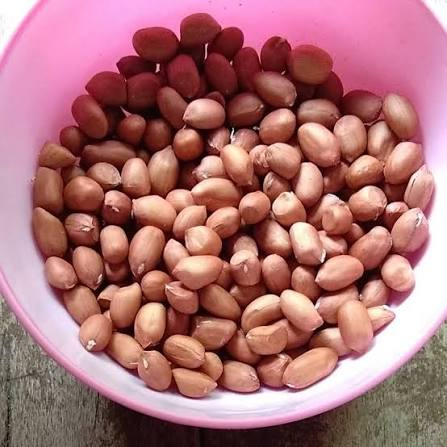
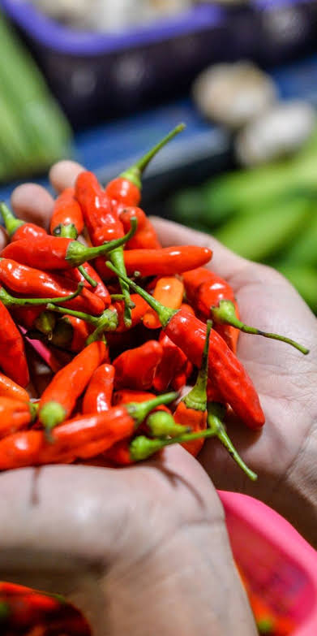
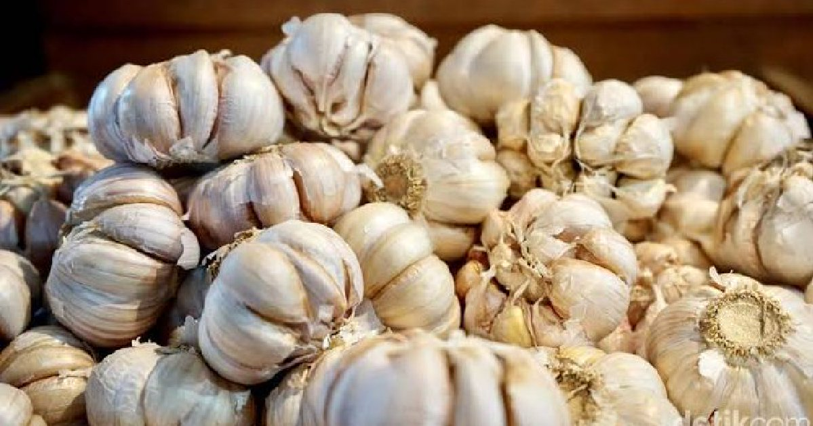

Nasi Putih

Nasi putih menjadi dasar hidangan dan sumber karbohidrat utama dalam satu piring pecel.
Rasanya netral, sehingga sambal dan sayuran menjadi pusat perhatian saat hidangan dimakan.
NASI PECELS
Rasa nasi pecel ditentukan oleh bahan yang sederhana, tetapi harus berimbang satu sama lain. Halaman ini menjelaskan sepuluh bahan dan bumbu yang berperan dalam hidangan nasi pecel, beserta fungsi dan sumbangannya pada cita rasa.
Penjelasan di bawah bersifat umum tentang fungsi tiap bahan dalam masakan pecel. Takaran tidak dicantumkan karena berbeda pada setiap dapur.
Nasi putih menjadi dasar hidangan dan sumber karbohidrat utama dalam satu piring pecel.
Rasanya netral, sehingga sambal dan sayuran menjadi pusat perhatian saat hidangan dimakan.

Sayuran rebus, misalnya bayam, kangkung, tauge, atau kacang panjang, menjadi sumber serat dan memberi volume pada hidangan. Jenis yang dipakai pada pecel umumnya mengikuti musim dan ketersediaan di pasar.
Sayuran yang direbus sebentar tetap terasa segar dan sedikit manis, sehingga mengimbangi sambal yang pekat.

Kacang tanah adalah bahan utama sambal pecel dan memberi tekstur kental serta rasa gurih. Kacang biasanya disangrai atau digoreng sebelum dihaluskan agar aromanya keluar.
Gurihnya kacang menjadi rasa dasar yang kemudian dipadukan dengan pedas, manis, dan harum dari bumbu lain.

Cabai memberi rasa pedas pada sambal. Tingkat kepedasan bergantung pada jenis dan jumlah cabai yang dipakai.
Pedas yang tegas adalah salah satu ciri pecel Blitar dan membuat rasa kacang tidak terasa berat di lidah.

Gula merah memberi rasa manis yang legit serta warna cokelat pada sambal.
Manisnya menyeimbangkan pedas cabai dan gurih kacang, sehingga sambal tidak terasa tajam pada satu sisi saja.

Kencur adalah rimpang beraroma khas, hangat, dan sedikit pedas. Bumbu ini dihaluskan bersama bumbu sambal yang lain.
Aroma kencur adalah penanda yang paling mudah dikenali pada sambal pecel, sehingga rasa pecel mudah dibedakan dari sambal kacang jenis lain.

Bawang putih menjadi dasar bumbu yang memberi aroma tajam dan rasa gurih.
Di dalam sambal, bawang putih memperdalam rasa dan menopang kacang, cabai, serta kencur.

Daun jeruk, yang biasanya berasal dari jeruk purut, memberi aroma segar seperti jeruk pada sambal.
Aroma ini mengangkat rasa sambal dan mengurangi kesan berat dari kacang.

Garam adalah penguat rasa yang mengatur keseimbangan seluruh sambal.
Takaran garam yang tepat membuat rasa manis, pedas, dan gurih terasa jelas satu per satu.

Bahan pelengkap adalah tambahan yang lazim mendampingi nasi pecel, seperti rempeyek atau kerupuk, di samping lauk yang tercantum pada halaman Menu.
Pelengkap yang renyah memberi tekstur berbeda terhadap nasi dan sayuran yang lembut.